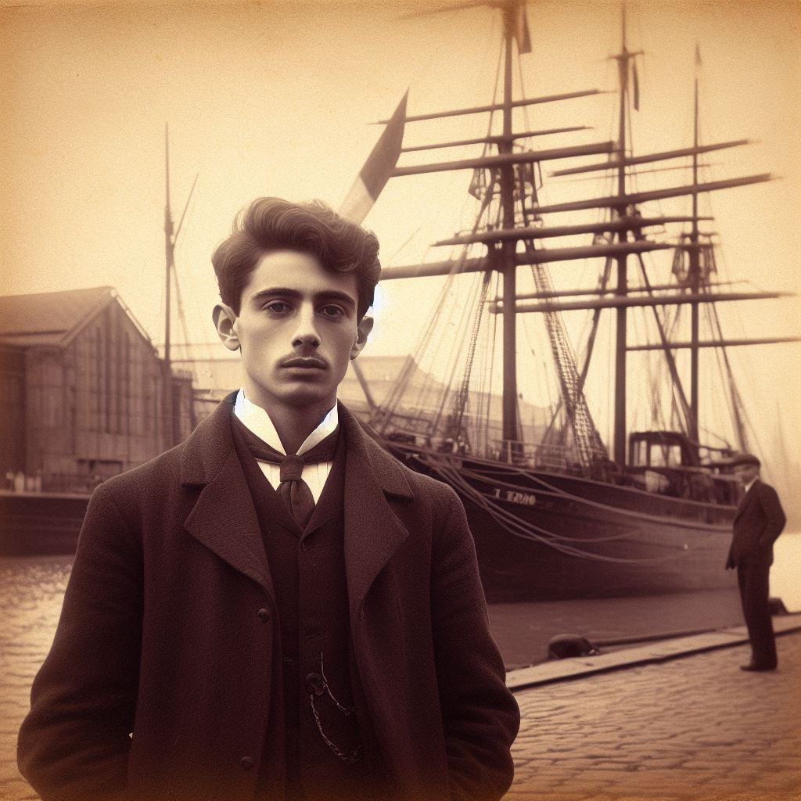
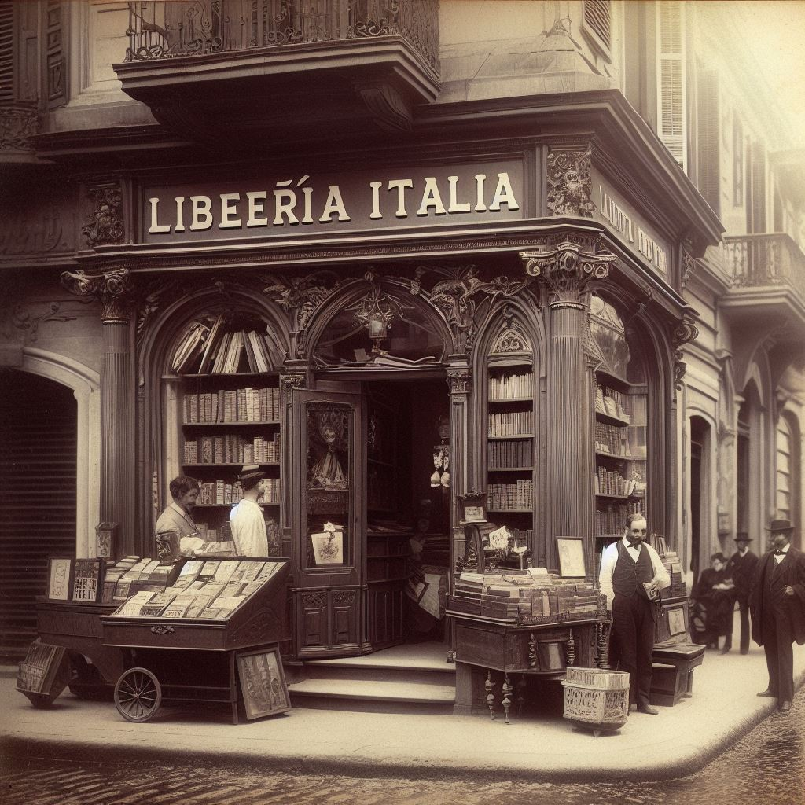
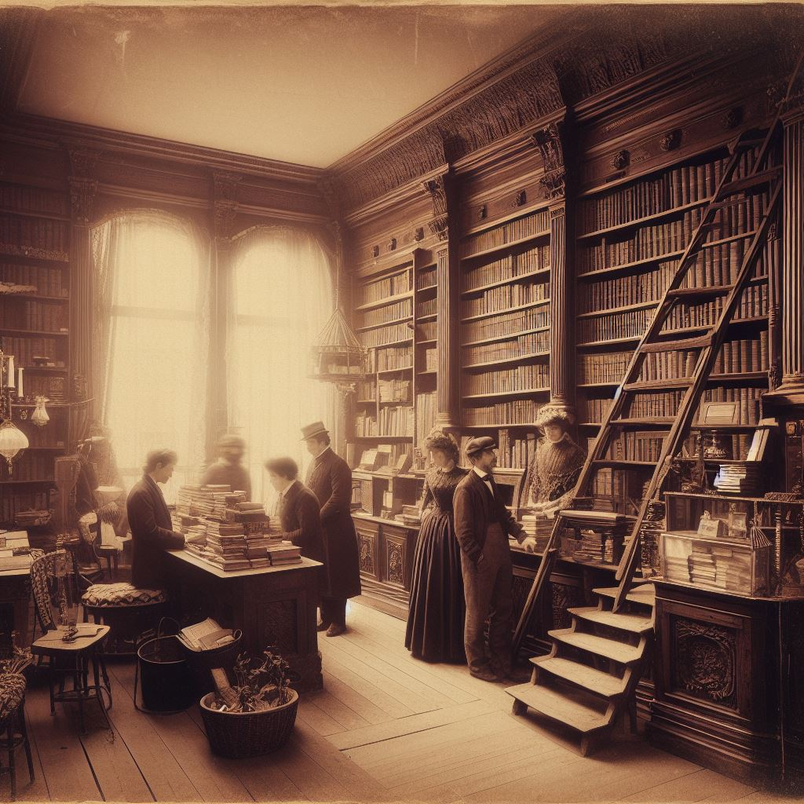

Nuestra historia
Hace más de un siglo, en el año 1898, un hombre valiente y apasionado por los libros llamado Giovanni llegó a Argentina desde la hermosa Campora, Italia. Con él, trajo consigo un sueño y un amor inquebrantable por la literatura. En busca de nuevas oportunidades en una tierra desconocida, Giovanni decidió establecerse en Buenos Aires y fundó una pequeña librería en el corazón de la ciudad.
La librería, que inicialmente llevaba el nombre de "Librería Italia", se convirtió rápidamente en un lugar icónico para los amantes de la lectura en la comunidad italiana y más allá. Giovanni trabajó incansablemente para traer los tesoros literarios de su tierra natal a Argentina, y al mismo tiempo, abrazó la rica tradición literaria de su nueva patria.
Con el tiempo, la librería se llenó de estantes repletos de libros de todas las formas, tamaños y géneros. Los habitantes de Buenos Aires, ávidos lectores, escritores y artistas, acudían a "Librería Italia" en busca de inspiración, conocimiento y conversación. La librería se convirtió en un centro cultural en la ciudad, un lugar donde se celebraban lecturas de poesía, discusiones literarias y exposiciones de arte.
A medida que pasaban los años, la librería pasó de generación en generación en la familia de Giovanni. Sus hijos y nietos compartieron su pasión por los libros y continuaron enriqueciendo el legado de "Librería Italia". El negocio familiar se adaptó a los cambios del tiempo, introduciendo nuevas tecnologías y ampliando su oferta para incluir libros en varios idiomas y formatos.
Hoy, la librería sigue siendo un faro de cultura y conocimiento en Buenos Aires, llevando el nombre de "Librería Don Giovanni" en honor a su fundador. La vieja fachada de la librería aún conserva su encanto y carácter originales, mientras que el interior está lleno de historias impresas esperando ser descubiertas.
A lo largo de los años, "Librería Don Giovanni" ha tocado la vida de innumerables personas, brindando un espacio para la imaginación y la exploración literaria. La historia de esta librería es una historia de amor por los libros, de pasión por la literatura y, sobre todo, de la conexión duradera que los libros pueden forjar entre generaciones y culturas. La librería sigue siendo un tributo a la visión y el coraje de un hombre que cruzó océanos en busca de un nuevo comienzo y dejó un legado literario perdurable en el corazón de Argentina.